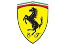

Escuderias y Monoplazas
| Imagen |
Escudería |
Chasis/Auto |
Motor |
|
Mercedes-AMG Petronas Formula One Team |
W13 |
Mercedes-AMG F1 M13 |
 |
Oracle Red Bull Racing |
RB18 |
Red Bull RBPTH001 |
|  |
Scuderia Ferrari |
F1-75 |
Ferrari 066/7 |
|
McLaren F1 Team |
MCL36 |
Mercedes-AMG F1 M1313 |
|
BWT Alpine F1 Team |
A522 |
Renault E-Tech RE22 |
|
Scuderia AlphaTauri |
AT03 |
Red Bull RBPTH001 |
|
Aston Martin Aramco Cognizant Formula One Team |
AMR22 |
Mercedes-AMG F1 M13 |
|
Williams Racing |
FW44 |
Mercedes-AMG F1 M13 |
|
Alfa Romeo F1 Team ORLEN |
C42 |
Ferrari 066/7 |
|
Haas F1 Team |
VF-22 |
Ferrari 066/7 |